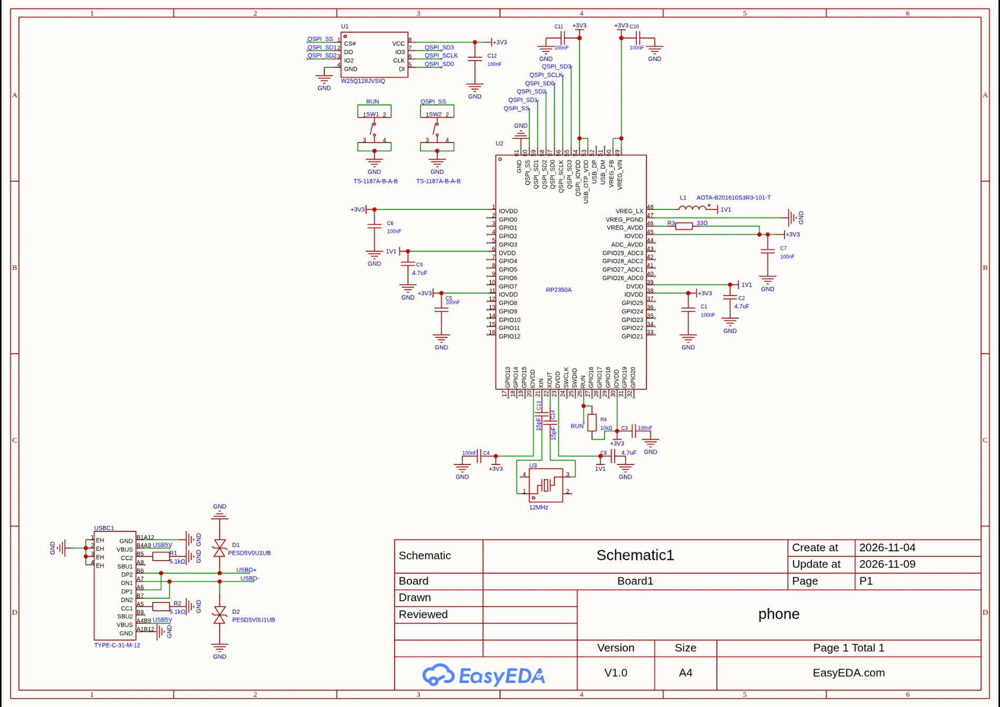

← All projects
PROJECT / DIGITAL ELECTRONICS · 2026
RP2350 device.
An RP2350-based handheld electronics concept, documented here at the schematic stage.
StageIn design
My partSchematic design

RP2350 / SYSTEM SCHEMATICIN DESIGN
The project
What went into it.
This is a schematic-stage design around the RP2350 microcontroller. The work focuses on the supporting circuits a standalone digital device needs, not just the microcontroller symbol: external flash, USB-C, clocking, voltage rails and basic run/debug controls.
- Built the schematic around an RP2350 microcontroller and external QSPI flash.
- Included a USB-C interface, ESD protection and debug/programming signals.
- Separated core and I/O supply connections with decoupling and regulation components.
- Added an external clock and physical control inputs.
- Documented the circuit as a design-stage artifact, not a finished or tested device.
This page represents circuit design work only. The board has not been presented here as fabricated, tested or capable of cellular communication.
Design evidence.
Click an image to view it larger.